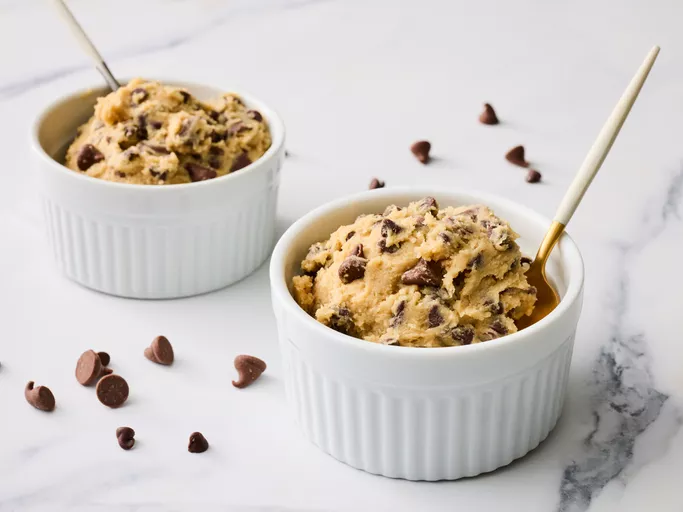

edible cookie dough

Description
edible cookie dough is a cookie dough that's edible.
it's in the fucking name
no but really,edible cookie dough is a cookie dough that is made in a way the the dough that we make is made in a way
that is safe to consume "raw", since normal raw dough is unsafe to eat due to the use of all-purpose flour (and eggs, though it isnt used in this recipe)
which cotains dangarous bacteria,which is why before we make dough, we will have to hea-treat the flour to make sure it is safe.
aside from that, there's nothing more to cookie dough than just a less stractured and less solid versions of actual cookies.
ingridients:
- 1 cup all-purpose flour
- 3/4 cup packed brown sugar
- 1/2 cup butter
- 1 tea spoon vanilla extract
- 1/2 tea spoon salt
- 2 table spoon milk
- 1/2 cup milk chocolate chips
- 1/2 cup mini chocolate chips
cooking steps:
- gather all of the ingridients on the table
- heat-treat your flour to make it sfae to eat:
- place the flour in a microwave-safe bowl dish
- cook the dough in the microwave for around 1 minutes and 15 seconds
- stir the flour every 15 seconds
- set the flour aside to rest
- get a newbowl, then mix sugar and butter to the bowl with an electric mixer until it turns creamy
- add in vannila excract and salt, then add add heat-treated flour aand mix until a crumby dough forms
- stir in milk until a normal dough is formed
- add and mix milk chocolate chips and mini chocolate chips
- enjoy!
back to home page